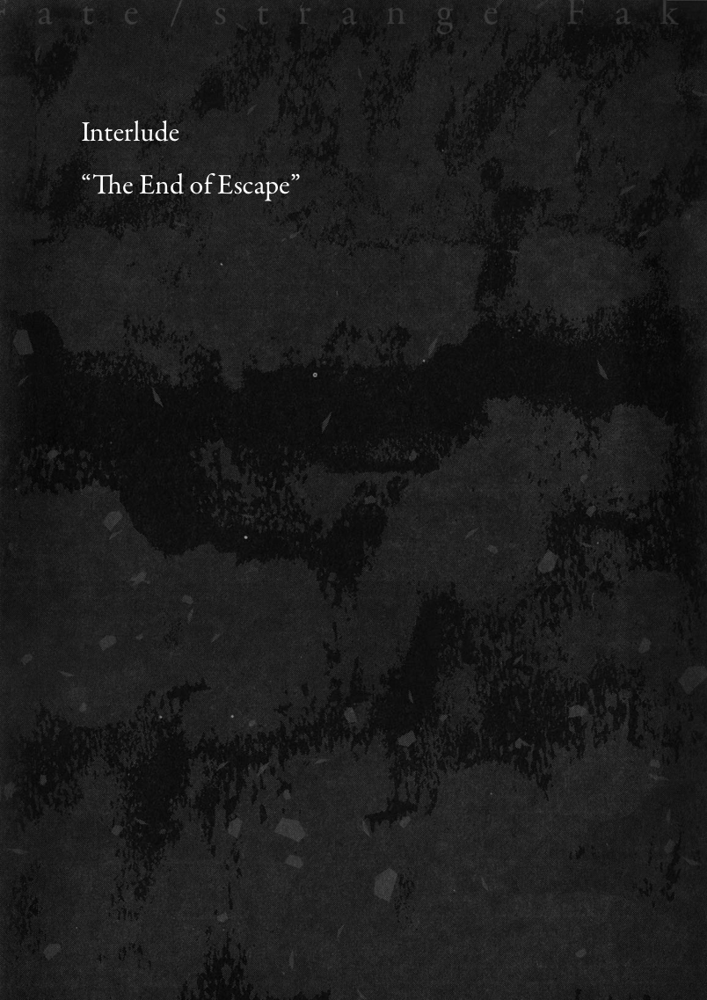

O Fim da Fuga. Esta é a história de uma fugitiva.
Uma mulher que desviou os olhos do próprio pecado e virou as costas para o "castigo" que se fechava sobre ela. Não tinha esperança, não tinha destino; não conseguia sequer ver um passo adiante no caminho. Ainda assim, não conseguia parar. Apenas continuava correndo. Mesmo sabendo que ao fim de sua estrada não a esperava nada além de destruição, a fugitiva continuava se agarrando a alguma coisa.
Na cidade de Fuyuki havia um conjunto habitacional chamado Apartamentos Semina. Foi ali que tudo começou e, para ela, ali também ficava o fim do mundo. Suas lembranças do tempo anterior àqueles apartamentos já não tinham mais significado. Todo o seu passado supérfluo fora arrancado dela fuga após fuga. Tudo o que lhe restava agora era a consciência da culpa e o medo do castigo. Isso, e a figura daquele "algo" de aspecto infantil usando um capuz vermelho, sempre a observando.
Se aquilo existia de verdade ou se era apenas uma ilusão provocada pela própria consciência culpada, nem ela sabia. No fim, enquanto fosse capaz de vê-lo, isso não fazia tanta diferença. Pelo menos era o que ela pensava.
Em busca de salvação, ela chegara até mesmo a ir à igreja sobre a colina de Fuyuki. Agora, aquilo não passava de uma lembrança vaga, mas ela tinha a sensação de que o padre de lá lhe dissera alguma coisa. Era só uma sensação, porque todas as suas lembranças em torno daquele período eram nebulosas.
"... ___ vai _____..."
"Será que __________ tem algo a ver..."
Ela sabia que aquilo era estranho, mas, sempre que se esforçava para lembrar, sua cabeça doía.
"No fim, ___ é..."
Sua incapacidade de se lembrar era estranha, mas pelo menos a sensação de que jamais deveria voltar a se aproximar daquela igreja fora gravada fundo nos instintos da fugitiva, como a aversão que um animal selvagem sente pelo fogo.
Então ela fugira da cidade de Fuyuki e vagara sem rumo por meses, depois anos. Sempre sentindo a presença da "Chapeuzinho Vermelho" na escuridão atrás de si, no negro da noite, do outro lado das sombras geradas pelas luzes da cidade.
O que eu devo fazer?
Incapaz de suportar a pressão, continuou vagando de lugar em lugar como um cadáver vivo. Por fim, como se estivesse sendo atraída por alguma coisa, voltou à cidade de Fuyuki.
Ela ouvira rumores na cidade de que o padre havia mudado, mas ainda assim não conseguia se obrigar a ir até a igreja. Os Apartamentos Semina deveriam ser seu lar, mas ela também não era capaz de voltar lá. Apenas continuou forçando seu cadáver a se arrastar pela cidade.
Então, enquanto procurava algum lugar para ir, ouviu um boato: "Tem uma casa de estilo ocidental na floresta." E, ao ouvir outros rumores sobre aquela casa, como o de que fantasmas apareciam lá, naturalmente se viu indo em sua direção.
Se os rumores eram verdadeiros, se fantasmas realmente apareciam ali, ela precisava vê-los com os próprios olhos. Precisava vê-los para ter certeza se a "Chapeuzinho Vermelho" que espreitava a escuridão ao seu redor era do mesmo tipo. Era esse o motivo que dizia a si mesma, mas talvez estivesse apenas procurando um lugar para morrer.
Mas, quando ouvira rumores parecidos sobre o templo da montanha e fora até lá, acabara não vendo nada além de peixes estranhos fazendo algazarra no lago, então não esperava muito de boatos. Ainda assim, achava melhor ir até a floresta do que continuar na cidade. No mínimo, a "Chapeuzinho Vermelho" não apareceria na floresta.
Seguindo as regras que descobrira durante a fuga, ela caminhou entre as árvores, que lhe lembravam a floresta de uma bruxa num conto de fadas. Então, uma enorme mansão de estilo ocidental, completamente destoante da atmosfera da região, ergueu-se diante dela. Antes que pudesse apreciar o quão sinistro era uma casa tão grande ter sido construída em segredo, foi dominada pela imponência majestosa do edifício. Podia muito bem chamá-lo de castelo.
A fugitiva apenas observava o castelo de longe. Jamais tentou entrar. Tinha medo de que uma mansão tão enorme pudesse ter algum tipo de elevador de serviço.
"A Chapeuzinho Vermelho aparece em elevadores."
Aquela era uma das regras. O motivo era óbvio.
Ela caminhou cautelosamente ao redor do castelo. Ao fazer isso, sentiu uma mudança no próprio coração.
O que será isso? É estranho... como posso dizer... hum... calmante. É, isso.
Não sabia por quê, mas, pela primeira vez em anos, sentiu-se aliviada. Depois disso, visitou muitas vezes o castelo na floresta. Nunca pôs os pés dentro dele; apenas se abandonava à paisagem imutável.
Então, vários meses depois, enquanto visitava o castelo como de costume, vozes de mulheres discutindo chegaram a seus ouvidos. Ela se surpreendeu com o primeiro sinal de gente que encontrava ali, mas não achou aquilo especialmente estranho. Bastava olhar para as flores desabrochando no jardim para entender que ao menos alguém cuidava da manutenção do lugar. Curiosa para ver que tipo de pessoas compunham a criadagem do castelo, ela seguiu silenciosamente na direção das vozes, mantendo-se escondida nas sombras das árvores.
Logo, duas mulheres entraram em seu campo de visão. À primeira vista, pensou que deviam ser gêmeas ou, no mínimo, irmãs. Isso porque suas características marcantes eram extraordinariamente parecidas. O belo cabelo prateado das duas era tão claro que ela o confundiu com branco puro, e a pele alva a fazia pensar num campo de neve. Até os olhos vermelhos, reconhecíveis mesmo à distância, combinavam.
As duas pareciam estar discutindo alguma coisa, mas uma delas tentava convencer a outra, enquanto a postura da outra sugeria que ela apenas estava dando vazão à própria raiva.
"Isso não faz o menor sentido! Filia, que diabos você está..."
"Chega! Eu não vou depender de vocês... vou levar isso até o fim sozinha!"
Quem seriam elas? Talvez este castelo seja a casa de veraneio de algum bilionário estrangeiro, e essas duas sejam funcionárias de lá? A fugitiva se perguntou enquanto observava as "mulheres brancas". Ainda assim, parecia-lhe que havia nelas uma aura de alteridade maior do que a de simples estrangeiras. Quase como se tivessem escapado de um conto de fadas...
Enquanto a fugitiva se ocupava com essas suposições fantasiosas, deixou completamente de perceber que não havia ocultado totalmente a própria presença.
"Mesmo que isso signifique abandonar o nome Einzbern, eu..."
Nesse momento, a mulher enfurecida parou de repente.
"...Quem está aí?"
O rosto da mulher, do qual toda expressão desaparecera quando ela se virou para olhá-la, parecia incrivelmente belo. E foi só até aí. Suas lembranças depois de cruzar os olhos com a mulher branca ficaram nebulosas, tal como as de sua visita à igreja. Provavelmente, ela fora colocada sob sugestão ou algo do tipo por meio de magia. Foi a mulher branca que mais tarde lhe martelou na cabeça o fato de que coisas assim existiam.
"Você é____? Ou _________________."
Diferentemente do que acontecia com a igreja, ela não sentia aversão alguma pelo castelo nem pelas mulheres brancas em si.
"Que tipo de coincidência é essa? Não pode ser _____..."
"Não pode ser... Não, não importa."
O gemido que ressoava no fundo de seu cérebro sempre que tentava lembrar do que acontecera naquele dia, porém, era o mesmo. Ela tinha certeza de que devia ter sido colocada sob sugestão, ou algo parecido. Ou talvez fosse o mesmo que aquele padre e ___ tinham feito com ela na igreja.
___.
Algo que estava com o padre. Sempre que tentava se lembrar daquele ser, seu cérebro rangia e suas memórias se desfaziam.
A mulher do castelo e o padre. Ela sabia muito bem que tinham sido aqueles dois a guiá-la por esse caminho quando ainda era apenas uma fugitiva, mas, por mais que tentasse, não conseguia se lembrar do que lhe haviam dito quando os encontrou. As lembranças nebulosas, em preto e branco, continuavam rodopiando em seu cérebro como metades separadas de um yin-yang.
Mas havia uma coisa de que ela se lembrava: algo que o padre dissera ao "algo" ao lado dele.
"O destino dela despertou meu interesse. Não fez você o mesmo por mim, uma vez?"
E também se lembrava de uma única coisa que a mulher branca lhe dissera no castelo.
"Você não tem o direito de escolher o próprio destino. Eu darei significado à sua vida."
A palavra "destino", gravada tanto nas palavras do padre quanto nas da mulher branca, transformou-se numa maldição e, no fim, a fugitiva foi sendo arrastada pelo que havia à sua volta e deixou o Japão para trás, exatamente como a mulher branca dissera. Mesmo agora, depois de ter sido arrastada para uma guerra mística na América, a fugitiva, Ayaka Sajou, continuava vagando em busca de respostas.
Como meus crimes podem ser perdoados?
O que, afinal, eu devo fazer nesta cidade...?
América. Snowfield. Numa casa noturna.
O porão de um prédio decadente no centro da cidade.
Um palco para shows ao vivo havia sido montado naquele espaço, que não dava para chamar de amplo, e uma melodia pastoral ressoava pelo local. O timbre e a melodia que saíam de um amplificador de guitarra elétrica pareciam deslocados a princípio, mas aos poucos ganhavam velocidade, acrescentavam um ritmo peculiar e se metamorfoseavam num som à altura da atmosfera de uma guitarra elétrica numa casa noturna. Era quase como se a melodia estivesse sendo refeita para se adequar ao instrumento enquanto era tocada.
Quando terminou a música, o instrumentista falou.
"Pronto... O que acharam?"
O homem segurando a guitarra elétrica não combinava nem com a música pastoral do começo. Vestia uma armadura magnífica, e uma brisa do ar-condicionado agitava seus cabelos loiros, riscados de vermelho. Às palavras do Espírito Heroico, Saber, vários homens e mulheres de olhos arregalados ao redor dele dispararam uma enxurrada de respostas empolgadas.
"Uau... você manda bem! Era sério mesmo que era sua primeira vez?"
"Incrível... você tem estilo. Eu jurava que fosse algum comediante promissor ou algo assim."
Os homens e mulheres barulhentos usavam moicanos espalhafatosos e multicoloridos, e tinham o corpo todo coberto de roupas, piercings e tatuagens de desenhos de outro mundo. Pareciam personificações da palavra "espinhoso", mas seus rostos exibiam sorrisos amistosos, e todos admiravam o homem que, em certo sentido, parecia o mais sobrenatural de todos ali.
"Você espera que a gente acredite que nunca tocou guitarra antes? ...Era o que eu queria dizer, mas tenho a estranha sensação de que você não está mentindo..."
"Não quero soar vulgar, mas dava para cobrar por essa apresentação."
Saber balançou a cabeça, parecendo satisfeito, mas envergonhado.
"Ora, não chego nem aos pés de profissionais como vocês. Esta é a primeira vez que toco uma dessas 'guitarras elétricas', mas há muito tempo aprendi a tocar um instrumento de cordas parecido com isto."
"Estou falando sério, você toca muito! Aliás, que música era aquela? Nunca ouvi antes."
"Ah, certa vez, há muito tempo, eu cometi um erro e fui capturado", respondeu Saber, sorrindo como se se tratasse de uma boa lembrança. "Apenas tentei acelerar o ritmo de uma melodia que compus por capricho enquanto estava preso."
"Quer dizer que você também compõe? E ainda é ex-presidiário?"
"Você é ele, né? O cara que foi preso na TV mais cedo e fez aquele discurso?"
Saber assentiu, um tanto envergonhado, em resposta à pergunta de uma mulher vestida em estilo punk.
"Então vocês estavam assistindo. Bem, minhas palavras foram curtas demais para chamar de discurso, mas..."
"Espera aí, você fugiu da cadeia? Isso é bem maneiro."
"Nós apenas evacuamos em meio à confusão depois do que aconteceu na delegacia. Não cabe a mim julgar se isso conta ou não como fuga da prisão", respondeu Saber educadamente, dando de ombros. O grupo de jovens ao redor dele ficou ainda mais animado.
"Cara, aquilo foi demais! O que foi aquilo? Aquela explosão, digo."
"Pareceu que o hotel também foi atingido feio."
"Falando nisso, ouvi dizer que mais cedo alguém ganhou tanto no cassino que você nem acreditaria..."
"..."
Uma figura estava encostada num canto do palco, ouvindo a conversa daqueles jovens sem dizer uma palavra. A mulher que deveria ser uma fugitiva solitária, Ayaka Sajou, balançou vigorosamente a cabeça e gemeu por dentro.
Era esse o meu destino?
No fim de sua fuga, ela fora parar numa casa noturna. Estava cercada por jovens vestidos à moda punk, completamente diferentes de qualquer pessoa que conhecera em Fuyuki, e por um Espírito Heroico intrometido que avançava destemido sobre seus limites o tempo todo.
"Escutem, fico até sem graça diante de profissionais como vocês, mas acabei de pensar numa nova melodia. Se importariam se eu tocasse?"
"Claro, manda ver. Estamos curiosos para ouvir o que vai sair daí agora."
"Obrigado! Ayaka, você também ouviria com atenção? Gostaria de saber o que achou depois."
Ela lançou um olhar fulminante para Saber, que voltara a dedilhar a guitarra elétrica enquanto falava. Por fim, soltou um suspiro de autopunição, como se quisesse negar a parte de si que havia se sentido minimamente tocada pela música dele.
O que, afinal, eu estou fazendo?